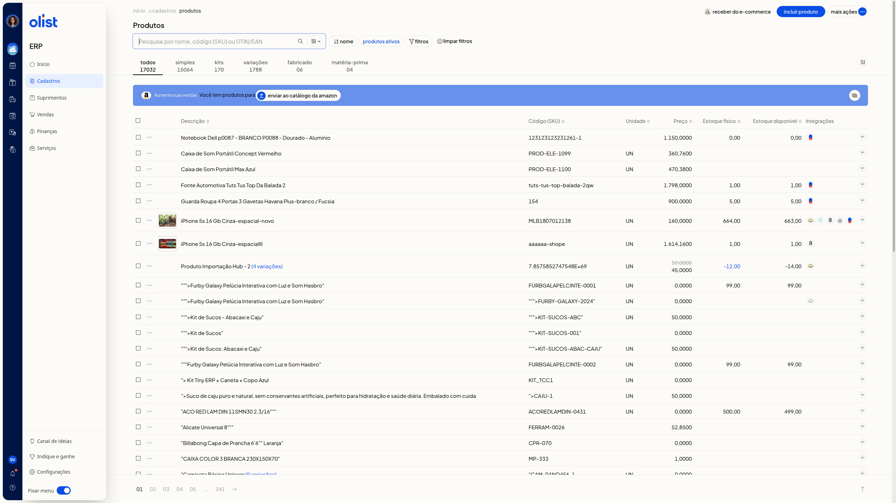
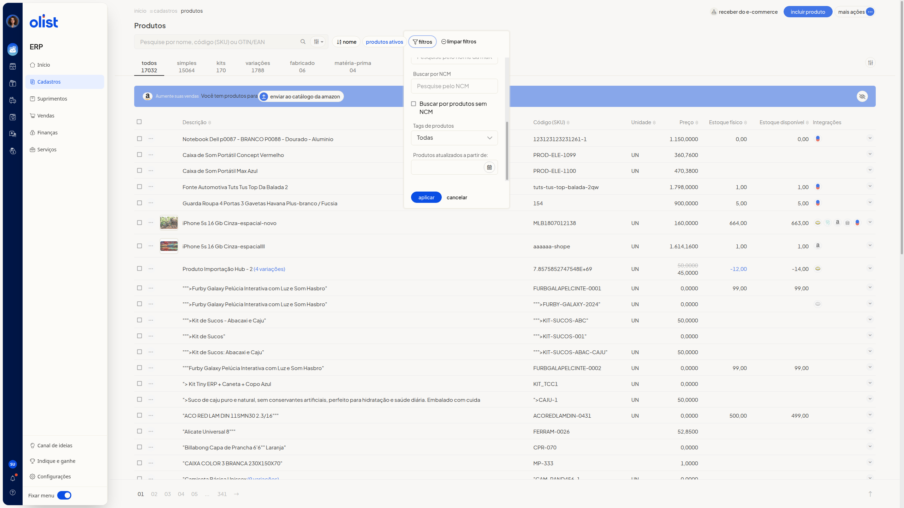

Como buscar e filtrar produtos na lista de produtos
Descrição
A lista de produtos do ERP da Olist permite consultar e filtrar os produtos. Você localiza um produto pelo nome, pelo código (SKU) ou pelo GTIN/EAN, alterna o tipo nas abas e aplica filtros de loja no ecommerce, categoria, fornecedor, marca, NCM, tags e data de atualização.
A lista fica no menu lateral, com o item Cadastros.
Pré-requisitos
- acesso à lista de produtos no ERP, com o item Cadastros visível no menu lateral.
Instruções
-
Abra a lista de produtos, com o item Cadastros no menu lateral do ERP.

-
Busque por nome, código (SKU) ou GTIN/EAN em Pesquise por nome, código (SKU) ou GTIN/EAN.
-
Use os atalhos nome, produtos ativos e limpar filtros.
-
Selecione a aba Todos, Simples, Kits, Variações, Fabricado ou Matéria-prima. Cada aba exibe a quantidade do tipo.
-
Clique em filtros.

-
Restrinja a lista, se quiser, com Que estão no e-commerce, Que não estão no e-commerce, categoria, Fornecedor, Marca, Buscar por NCM, Buscar por produtos sem NCM, Tags de produtos e Produtos atualizados a partir de. Que estão no e-commerce e Que não estão no e-commerce filtram as lojas em que o produto está ou não está no ecommerce.
-
Clique em Aplicar ou em Cancelar. A lista mostra os produtos nas colunas Descrição, Código (SKU), Unidade, Preço, Estoque físico, Estoque disponível e Integrações, com paginação.
Resultado
A lista exibe os produtos por tipo, com paginação.
Links relacionados
Se a busca ou os filtros não localizarem o produto, fale com o suporte.